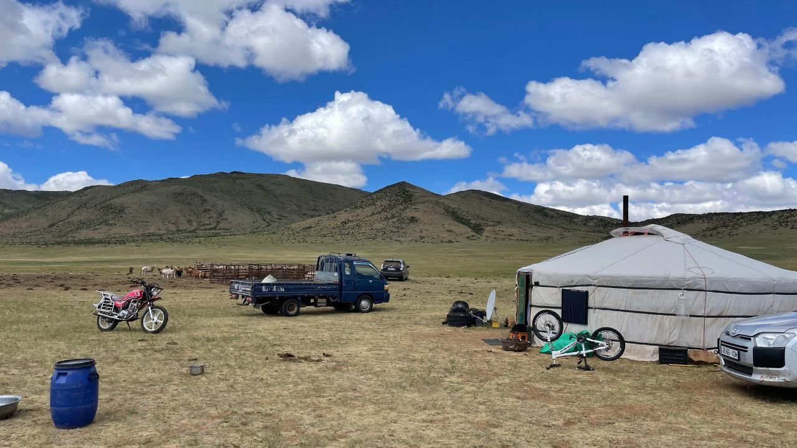
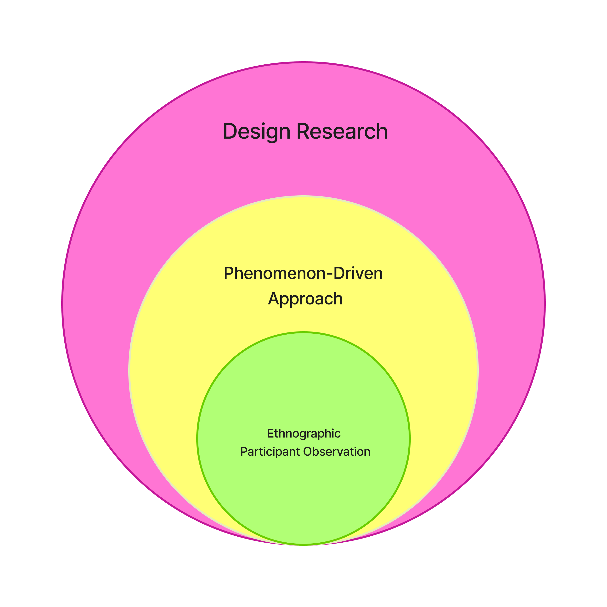
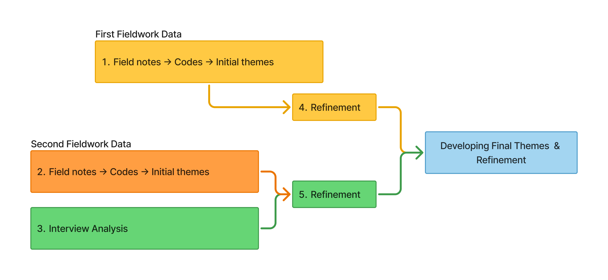
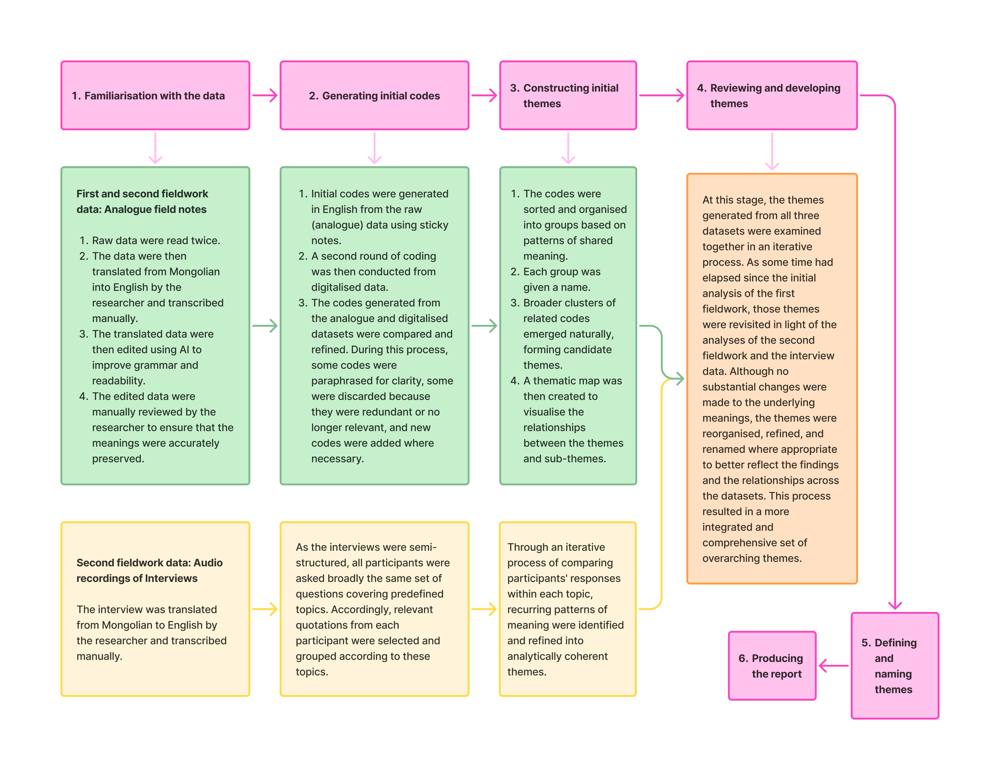
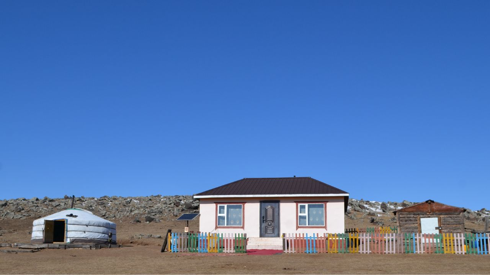
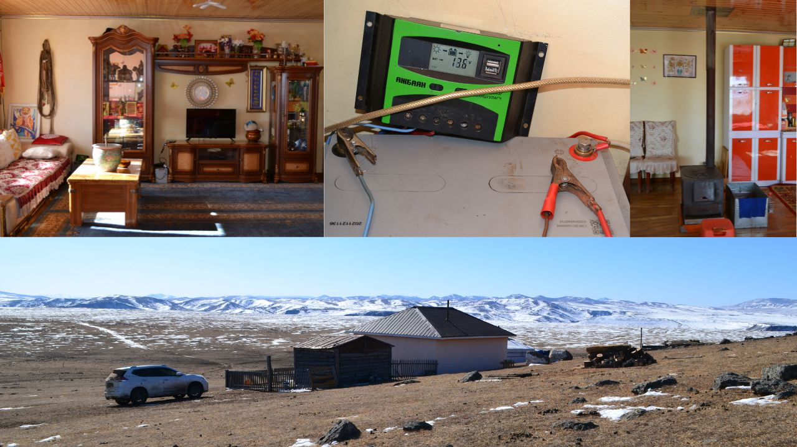
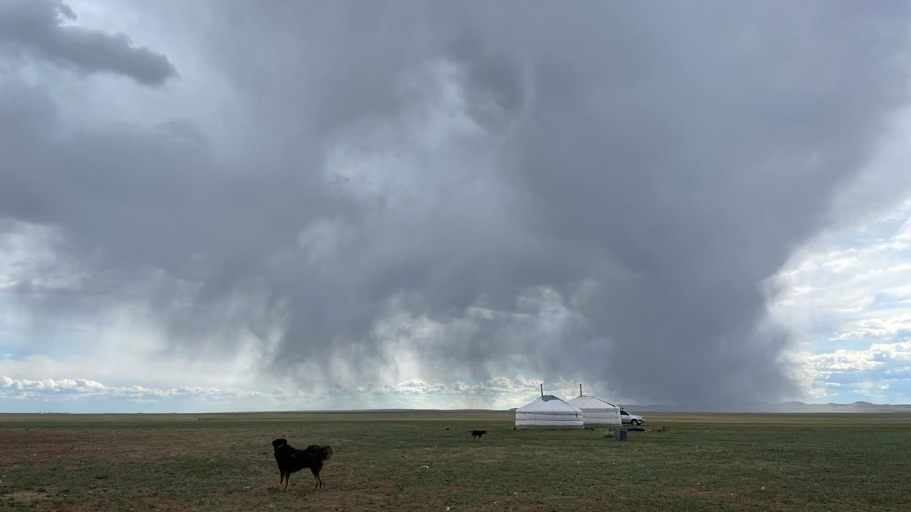
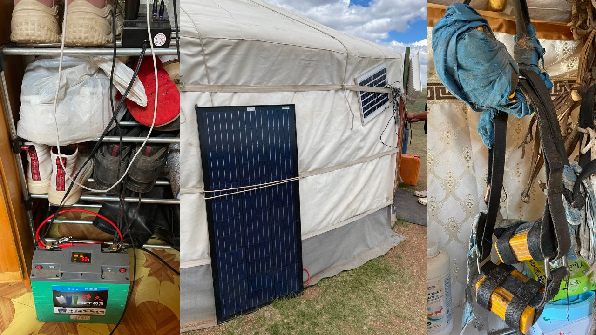
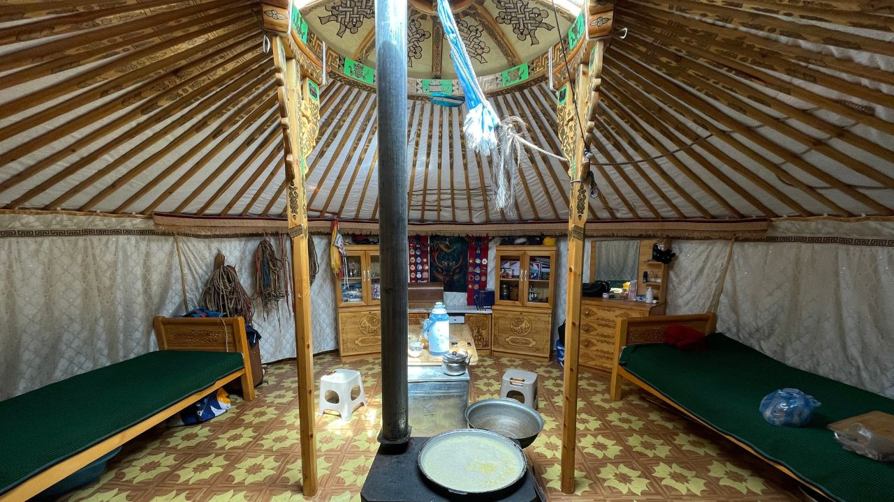
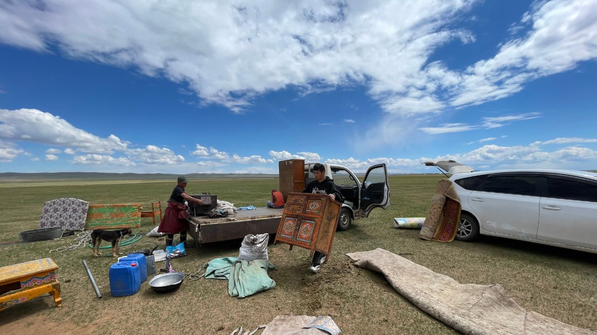

Master’s Thesis · Design for Digital Futures (M.A.)
Faculty of Design · Technische Hochschule Nürnberg Georg Simon Ohm
Supervision: Prof. Michaela Honauer
Supervision: Prof. Max Ackermann

Nomadic pastoralism, still practised by one third of Mongolia’s population, is one of the world’s oldest continuously practised nomadic cultures. Beyond its economic importance, it remains deeply rooted in Mongolia’s cultural life. In recent years, technologies such as mobile phones, motorcycles, and GPS trackers have become increasingly embedded in everyday nomadic life. Yet little is known about how herders experience these changes. This thesis asks what happens to nomadic life as these technologies enter it, and how future technologies for nomadic communities should be designed. Taking a phenomenon-driven approach to design research, it combines ethnographic participant observation across two field visits in Khentii and Bulgan Provinces with postphenomenological analysis of technological mediation. The findings suggest that herders understand technology pragmatically; that communication technologies mediate both communal autonomy and socio-economic engagement with the wider world; and that herding knowledge is embodied, while phones and GPS trackers amplify the practical dimensions of herding and diminish its embodied and social dimensions. From these findings, the thesis develops a manifesto of four statements and accompanying design principles. Rather than prescribing solutions, the manifesto offers orientation for design that aligns with nomadic values and ways of understanding the world. The thesis contributes to discussions among designers and Mongolian publics about what technologies for nomadic futures could and should be like.
RQ1: What is happening to Mongolian nomadic life as technology becomes increasingly present?
RQ2: What should technologies that support Mongolian nomadic communities be like?
The research is phenomenon-driven: it starts from an observed phenomenon in the world rather than a theory to test or a solution to build. Understanding comes first and design knowledge follows from it, which is why the two research questions run in that order.
To understand technology as it is actually lived, it has to be studied where it happens. The study is therefore ethnographic, built on participant observation with nomadic households — staying with families, taking part in daily work, and noticing how technologies are used in situ.

Fieldwork took place across two visits, designed so the first could shape the second. Five days in Bulgan Province in March 2026 were exploratory: observing daily life, participating in household activities, keeping fieldnotes and photographs, and identifying themes worth pursuing. Five days in Khentii Province in June 2026 followed those themes more closely and added five semi-structured interviews alongside continued observation, fieldnotes, photographs and video. As a Mongolian researcher, I worked in Mongolian throughout the research process, and my cultural background helped me build rapport with nomadic families.
Three datasets — field notes from the first and second fieldworks, and interview data from the second — were analysed using reflexive thematic analysis (RTA). See the diagrams below for detailed explanation.


A postphenomenological analysis of the most frequently used technologies was also undertaken, informed by the nomadic context and the themes identified, to further examine the relationships between people, technologies, and their experiences.
The manifesto was developed iteratively from the findings (themes developed through RTA and postphenomenological analysis), drawing also on my own cultural knowledge. Design-oriented ideas recorded throughout the analysis were written onto sticky notes, clustered, and reworked — combined, split, reworded, checked back against the themes — until each cluster expressed a single coherent orientation. Those clusters became the four manifesto statements, with the more specific ideas retained beneath them as design principles.
The research was ethically approved by the Gemeinsame Ethikkommission der Hochschulen Bayerns (GEHBa). Consent was obtained in writing and explained in Mongolian, and treated as ongoing throughout the fieldwork. All data are anonymised, with participants identified only by household role.
GPS Trackers. Traditionally, locating free-grazing horses meant riding out for days, reading the terrain and animal behaviour, and asking at households along the way. Trackers replace this searching with retrieval: the herd appears on a screen, allowing herders to travel directly to it. This saves time and labour, reduces risk, and helps prevent theft. But it also reduces the repeated engagement through which herders develop what they call intuition, understood here as embodied knowledge built through years of experience with the land, weather, and animals. Since searching was also social, the encounters and conversations it generated are reduced as well.
Communication Technologies. Local Facebook groups have become shared channels for news, advertisements, and reports of lost animals. Asking after the herd now commonly means a phone call or a post rather than a journey. In one case, a photograph of an unfamiliar horse posted to a local group was recognised by its owner in another province. These technologies greatly amplify the speed and reach of communication, allowing dispersed households to stay connected without travelling. Herders increasingly gather information by reading photos, posts, and messages on a screen. This reshapes how information, news, help, and local knowledge circulate through pastoral communities.
Statement One: Design for co-living relations between and within humans and non-humans.
Design principles:
Statement Two: Design for embodied relations. Nomadic knowledge and relationships with animals, landscapes, communities, and the spiritual world are maintained through everyday practices of movement, care, observation, ritual, and work. Technology should support these practices rather than replace them.
Design principles:
Statement Three: Design for a mobile way of life. Mobility is the core element of nomadism and design should correspond to that.
Design principles:
Statement Four: Autonomy in nomadic life is achieved through self-organisation, not isolation — at the level of the household, and the community. Technology should extend this capacity for self-organisation rather than substitute it with external dependencies.
Design principles:
Herders letting the horses out to graze.






I owe my gratitude to the nomadic families and communities of Khentii and Bulgan Provinces in Mongolia, who welcomed me into their homes and daily lives, shared their time and knowledge so generously, and made this research possible. Their willingness to let me witness and learn from their everyday practices forms the foundation of this thesis.
I am also grateful to the New Nomad Institute, whose support in connecting me with participants was invaluable, and whose work has inspired me to keep working and engaging with nomadism.
To my supervisors, Professor Michaela Honauer and Professor Max Ackermann, I extend my sincere thanks for their guidance throughout the research process, their insightful and constructive feedback, and their trust in this project from the earliest stages.
AI tools were used to improve the language, grammar, spelling, and punctuation of the text on this page.